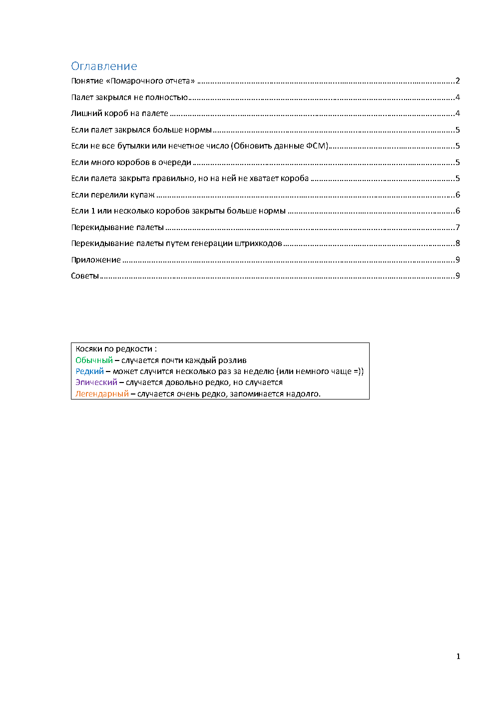
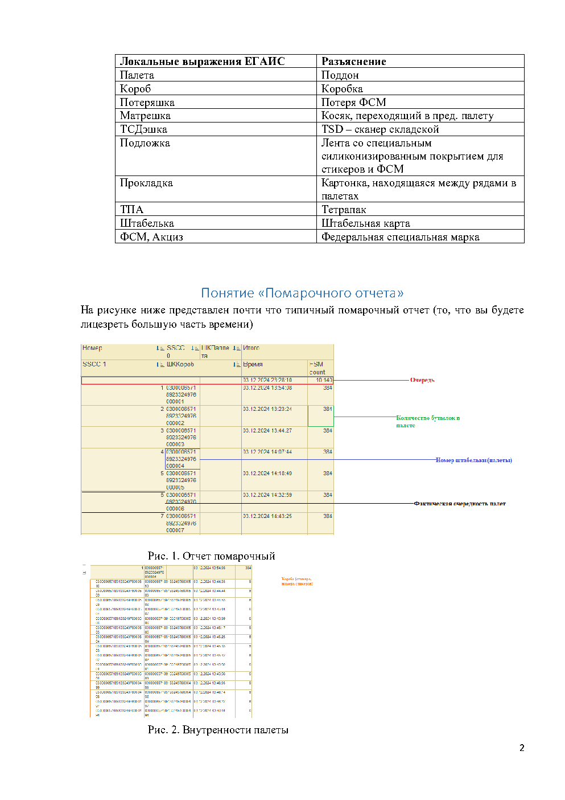
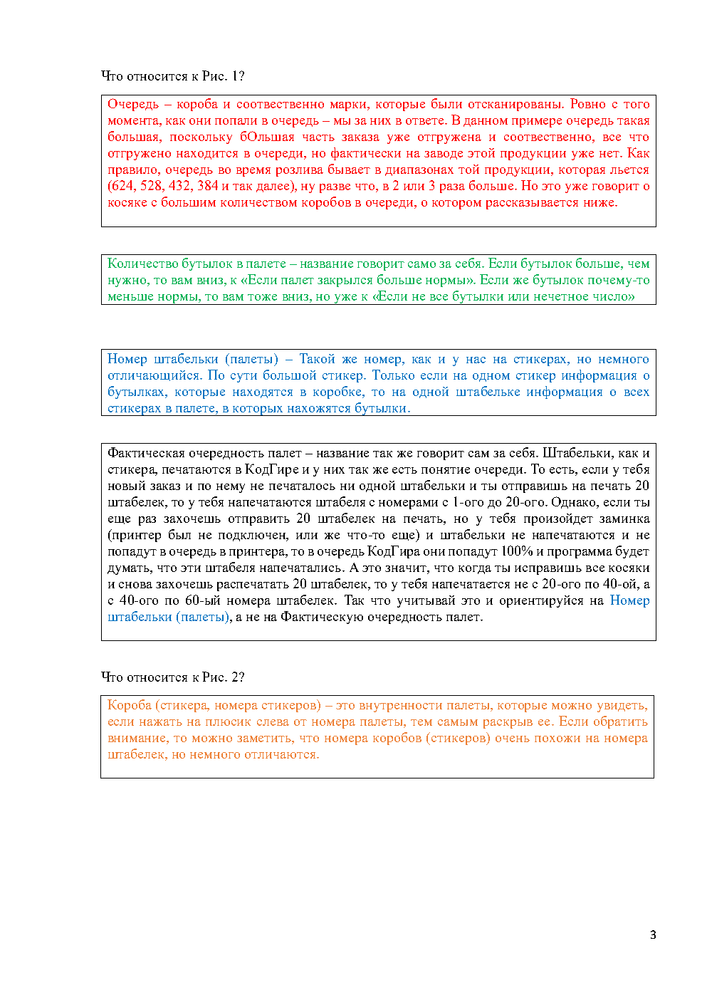
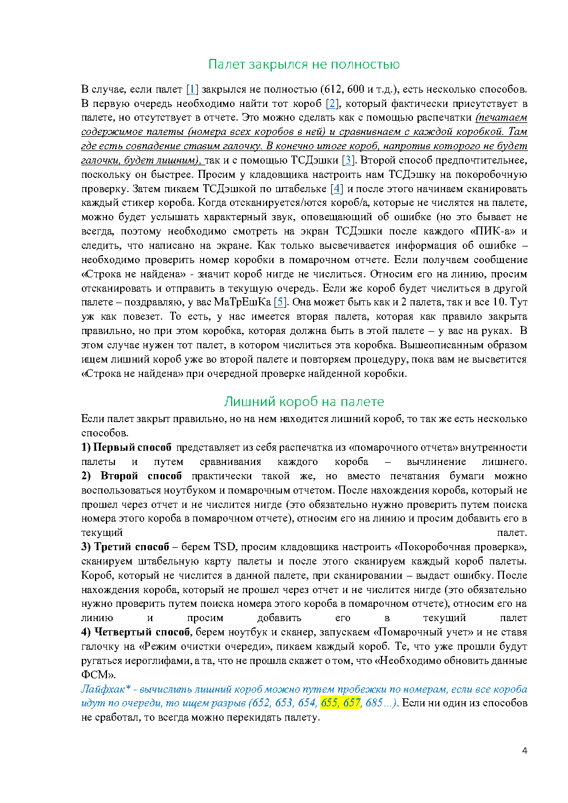
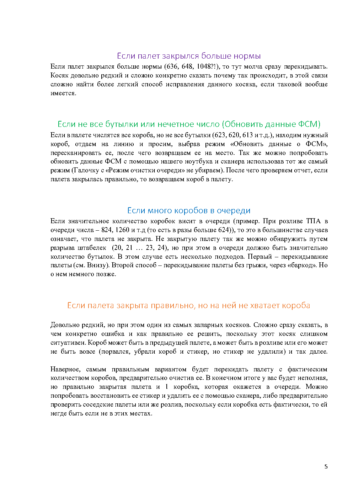
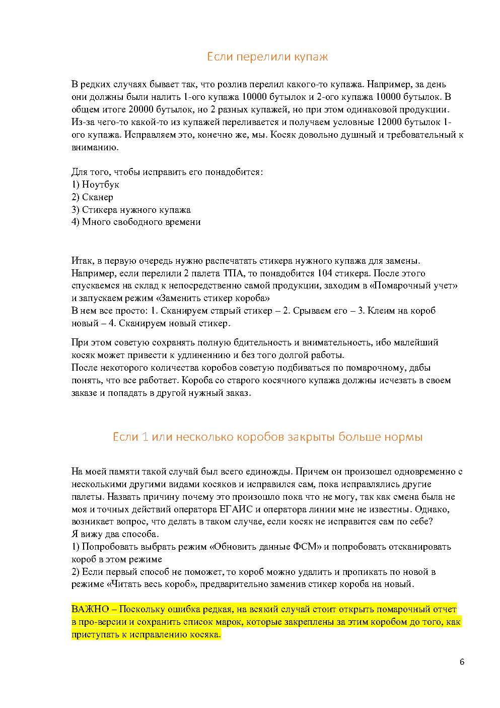
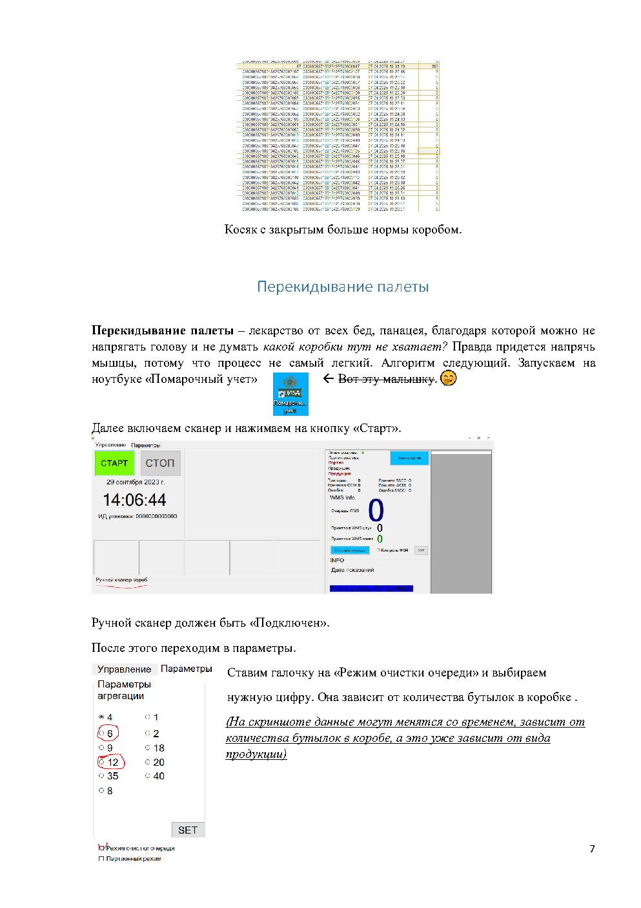
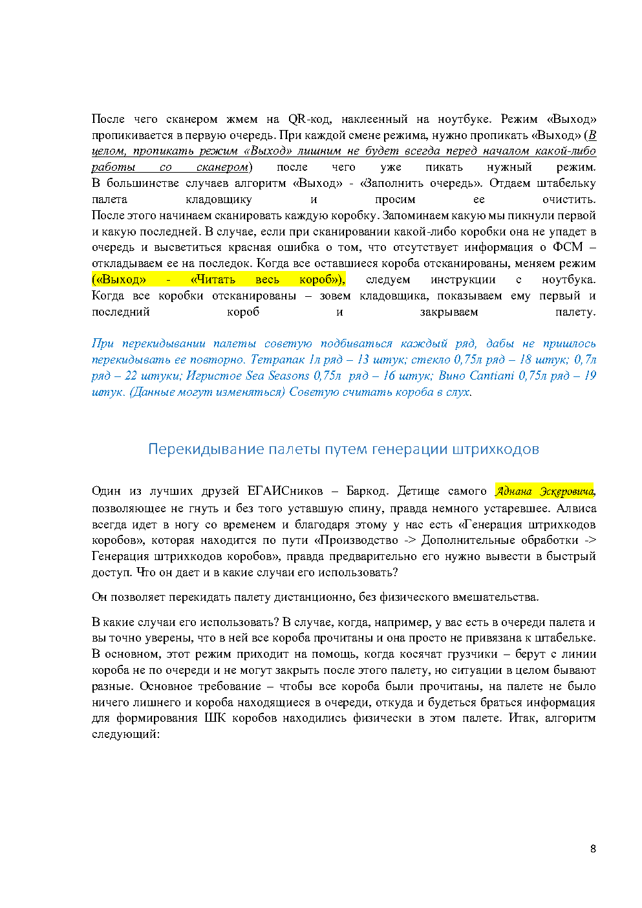
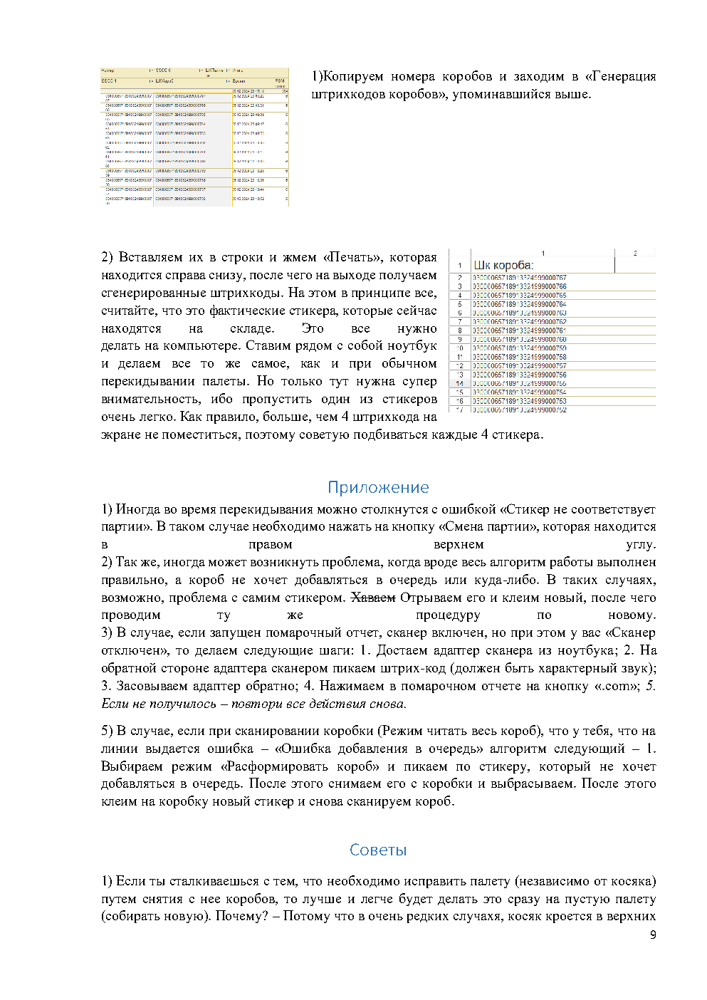
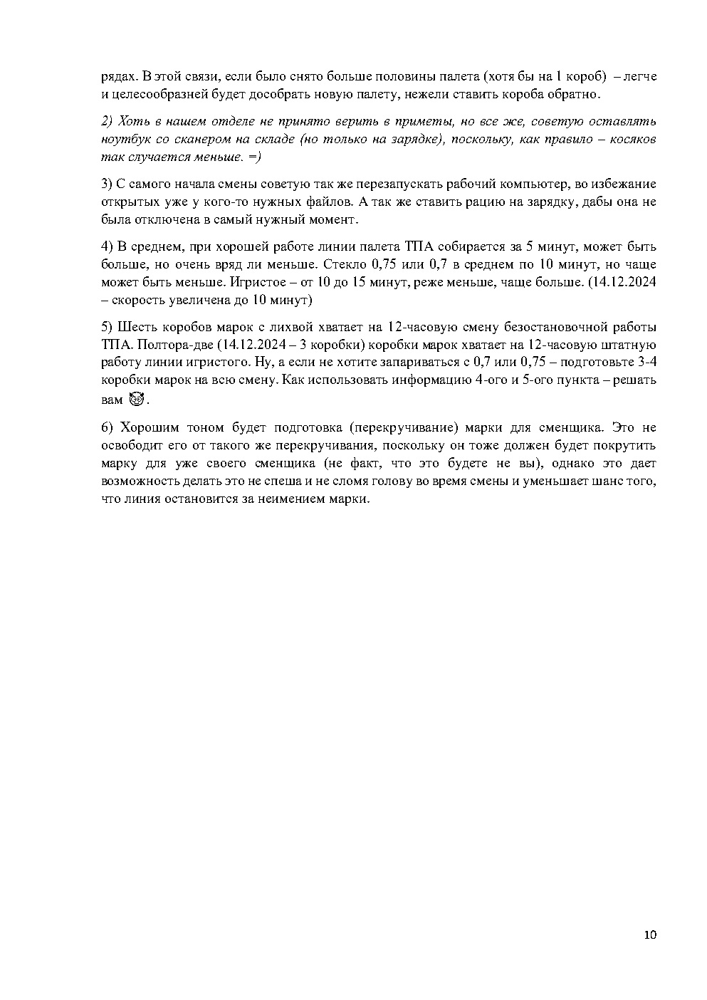

Словарь ЕГАИСника
быстрая расшифровкаПалета
Поддон.
Короб
Коробка со стикером.
Потеряшка
Потеря ФСМ.
Матрешка
Косяк, который уходит в предыдущую палету.
ТСДэшка
Складской TSD-сканер.
ФСМ / Акциз
Федеральная специальная марка.
Если вам нужен доступ к этим инструкциям, проверьте, что ваш аккаунт добавлен именно в отдел ЕГАИС.
Вернуться в профильБыстрый справочник по частым ситуациям: неполный палет, лишний короб, нечетное количество бутылок, большая очередь, перелитый купаж и перекидывание палеты.
Нужно найти короб, который фактически есть на палете, но отсутствует в отчете.
Если палет закрыт правильно, но сверху есть лишний короб, сначала выясняем, проходил ли он через отчет.
Если бутылок больше нормы, самый надежный путь — не тратить время и перекинуть палет.
Когда короба есть, но бутылки не сходятся, обычно помогает режим обновления данных ФСМ.
Большая очередь часто говорит о незакрытом палете или проблеме с привязкой штабельки.
Универсальный способ, когда проще собрать палет заново и не гадать, где именно ошибка.
Все короба и марки, которые уже отсканированы. С момента попадания в очередь они становятся зоной ответственности ЕГАИС.
Если больше нормы — смотрим сценарий “больше нормы”. Если меньше или число странное — идем к обновлению ФСМ.
Ориентироваться лучше на номер штабельки, а не только на фактическую очередность печати.
Раскрываются через плюсик рядом с палетой. Там видны короба, которые отчет считает находящимися внутри.
Цель — найти короб, который физически лежит на палете, но отсутствует в отчете.
Сверьте каждый короб с внутренностями палеты. Короб без совпадения проверяйте поиском по помарочному отчету.
Покоробочная проверка быстрее: сканируем штабельку и каждый короб, ошибка покажет лишний.
В “Помарочном учете” без режима очистки очереди пикаем короба. Уже прошедшие будут ругаться, не прошедший попросит обновить ФСМ.
Если отчет показывает 636, 648 или вообще что-то невероятное, надежнее сразу перекидывать палет. Ошибка редкая, причины могут быть разными, а поиск “легкого” решения часто съедает больше времени.
Если короба в палете есть, но бутылок меньше нормы или число странное, найдите нужный короб и обновите данные ФСМ. Это можно сделать на линии или через ноутбук со сканером, если выбран правильный режим.
Если очередь в разы больше ожидаемой для текущей продукции, чаще всего палета не закрыта. Ищите разрыв по штабелькам и сверяйте количество бутылок в очереди.
Перекинуть палет обычным способом.
Если уверены, что все короба прочитаны и нет лишнего, закрывать через генерацию штрихкодов.
Ситуация редкая и неприятная: короб может быть в соседней палете, на розливе или отсутствовать физически. Самый стабильный вариант — очистить и перекидать палету с фактическим количеством коробов.
Подходит, когда палета есть в очереди, все короба прочитаны, лишних коробов нет, а проблема в привязке к штабельке. Путь: “Производство” -> “Дополнительные обработки” -> “Генерация штрихкодов коробов”.
Если нужен полный текст или скриншоты из документа, они сохранены ниже.









